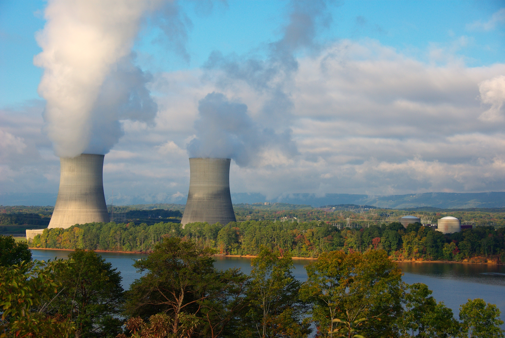

The general impression I got when first looking into a tokamak was: 'the magnets
confine and sustain the fusion reaction, and the reactor blanket does pretty much everything else'. Hopefully
this website has shown that this is certainly not the case, but I believe that these
initial thoughts were due to the exceptionally wide range of essential functions that the reactor blanket must serve to enable the continuous operation of a tokamak.
Indeed, none of the other components that have been or will be introduced must play as many roles as the reactor blanket does, and on this page I aim to introduce just a few of the most significant ones.
The reactor blanket is the term used to describe the immediate surrounding structures of the plasma
domain (the region in which the fusing plasma is confined). It must serve four key
functions:
Figure 1: Thermal Power station
Protect the magnets (which are just a few metres away from the plasma domain), as well as other surrounding structures and human personnel from electromagnetic radiation and high-energy neutrons.
Tritium breeding. A fusion power plant will need to breed its own tritium due to the scarce stores we have here on Earth (Roughly 20kg. A 500 MW fusion power plant will require ~ 50kg 1). Such a process could potentially take place in the blanket, with ITER set to trial this in the later years of its operational life.
Recover energy from the emitted radiation and fusion products to eventually be converted to electrical energy. This will be achieved via the conventional methods of a thermal power plant.
Maintain an impurity-free plasma domain. The first wall of reactor blanket (as well as the divertor) are the structures that face direct contact with the plasma, and so must be engineered to minimise high Z-number atoms entering the plasma domain, whilst being fashioned from a material that can withstand an extremely high heat flux.
ITER will line the inside of their vessel with 1 x 1.5 metre blanket modules that aim to accomplish all four tasks. Following the order of the list above, we'll begin with how the blanket provides protection.
Shielding
Before we look at how to shield human personnel, the magnets and other parts of the
tokamak, let's delve further into the question of what we are shielding from in
the first place. You may recall from previous pages that a fusion reaction involves two
isotopes of hydrogen as reactants (deuterium and tritium), which fuse and form two
products, an alpha (ɑ) particle and a neutron. The reactants in this process
have a higher rest mass than the products, and so conservation of energy dictates that
the neutron and ɑ particle carry 17.6 MeV more kinetic energy than the products, of which
14.1 MeV is held by the neutron, and 3.5 MeV by the ɑ.
Figure 2: The hell you looking at The presence of the 14.1 MeV neutron is quite a pressing matter, as its interaction with surrounding structures are problematic to say the least.
On collision with the reactor walls, the neutron can displace the wall's constituent molecules which often find a way
back into the plasma; a process known as sputtering. The effects of this are discussed in greater detail on the
Divertor page, but know that the presence of such impurities is only detrimental to achieving
net power output. The neutron also attacks the strutural integrity of surfaces it is incident upon, with the microscopic
voids left by the sputtered atoms becoming larger over time, leading to cracks and changes in the macroscopic behaviour of
the material. Mitigating this effect could save a good deal of money on the operational costs of a fusion power plant, by
reducing the need for replacement parts every few years. Further issues stemming from the 14.1 MeV neutron include the unwanted heating
of the superconducting magnets confining the plasma (), neutron activation and exposure of nearby organisms to ionising radiation, amplified by outgoing brehmsstralung and line emission radiation.